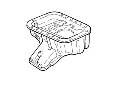
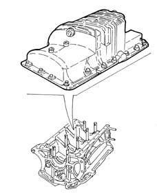
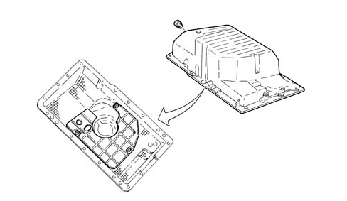
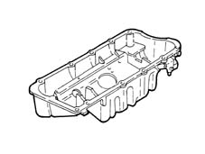
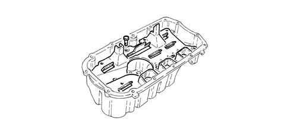
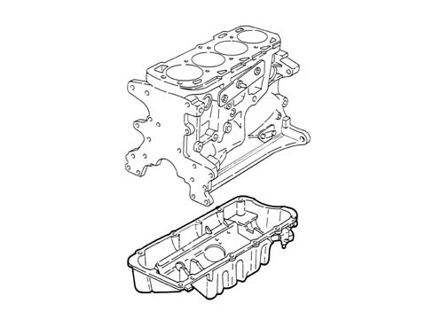
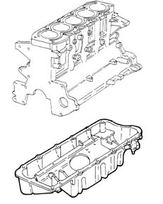

1020A crank case oil sump
- Path
- Descriptions > 10 ENGINE > 1020 CRANKCASE SUMP AND COVERS > 1020A crank case oil sump
- Kind
- system description
- Applies to
- all engines; all production periods
- Interactive page
- https://sloeber94.github.io/elrnDB-a156/en/#/3232822
Applies to: engines: 1.6 TS , 1.8 TS; all production periods
Made out of aluminium alloy, this is a structural part of the engine which, in addition to containing the engine oil, has mechanical functions as it is directly connected to the intermediate shaft support.
Baffles are fitted inside the sump.
When the oil sump is secured to the crankcase, sealant is interposed.

Applies to: all engines; all production periods
In lega di alluminio è una parte strutturale del motore con funzioni meccaniche, oltre che di contenimento dell'olio motore, in quanto è direttamente collegata al cambio e al supporto posteriore motopropulsore.
All'interno della coppa sono montate delle paratie antisbattimento.
La coppa olio è fissata al basamento con interposizione di apposito sigillante.
Applies to: engines: 2.5 V6; all production periods
In aluminium alloy with baffles inside.
When the oil sump is secured to the crankcase, sealant is interposed.

Applies to: engines: 3.2 V6; all production periods
CONSTRUCTION FEATURES
In aluminium alloy with baffles inside.
It is secured to the engine block by an intervening layer of sealant.

Applies to: engines: 1.9 JTD 8v ; all production periods
Made out of aluminium alloy, this is a structural part of the engine which, in addition to containing the engine oil, has mechanical functions as it is directly connected to the intermediate shaft support.
Baffles are fitted inside the sump.
A plate is fitted to the lower part of the sump near the groove that holds the front of the exhaust pipe to contain the plate in case of violent impact.

Applies to: engines: 2.4 JTD 10v; all production periods
Refer 1012A crank case and components1.9-JTD
Applies to: engines: 2.0 JTS, 2.0 JTS; all production periods
CONSTRUCTION FEATURES
Made out of aluminium alloy, this is a structural part of the engine which, in addition to containing the engine oil, has mechanical functions as it is directly connected to the intermediate shaft support.
Baffles are fitted inside the sump.
When the oil sump is secured to the crankcase, sealant is interposed.

Applies to: engines: 1.9 JTD 16v; all production periods
CONSTRUCTION FEATURES
This is a structural part of the engine which, in addition to containing the engine oil, has mechanical functions as it is directly connected to the intermediate shaft support.
The aluminium alloy oil sump contains special partitions which prevent the engine oil from moving around too vigorously and possibly draining the pump.
There is a reinforcement plate in the lower part of the sump by the groove for housing the front section of the exhaust pipe designed to restrain the exhaust pipe in the case of sudden impacts.

Applies to: engines: 2.4 JTD 20v; all production periods
COMPONENT DESCRIPTION
CRANKCASE SUMP
Specifcations
Function
This is a structural part of the engine which, in addition to containing the engine oil, has mechanical functions as it is directly connected to the intermediate shaft support.
Type
The aluminium alloy oil sump contains special partitions which prevent the engine oil from moving around too vigorously and possibly draining the pump.
There is a reinforcement plate in the lower part of the sump by the groove for housing the front section of the exhaust pipe designed to restrain the exhaust pipe in the case of sudden impacts.
